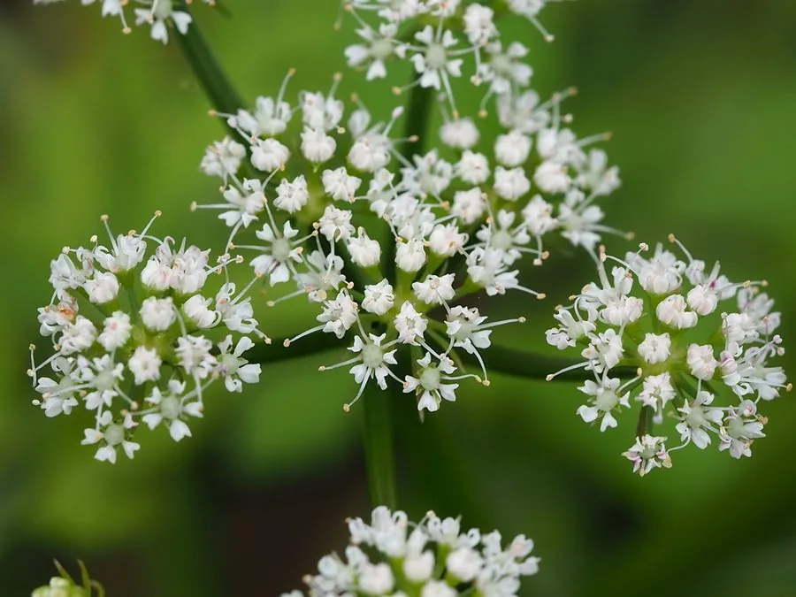

水生植物 · 植物界
水芹 Oenanthe javanica

伞形科多年生水生草本，茎中空有节、清香脆嫩，是江南“水八仙”之一，野生于溪边水田，原产亚洲，需与剧毒的毒芹区分。
- 分类
- 门被子植物门纲木兰纲目伞形目科伞形科属水芹属
- 栖息环境
- 溪边、水田、湿地及浅水中，喜温暖、湿润
- 地理分布
- 原产亚洲，中国各地水边常见，长江以南广泛栽培
- 保护级别
- 暂无评估
物种志
水芹为伞形科水芹属多年生水生或湿生草本，株高 30–80 厘米，茎中空、有节，基部匍匐，节上生根。叶片二回羽状分裂，小叶卵形，边缘有锯齿。复伞形花序顶生，花小、白色，花期 6–7 月；果实为双悬果。
水芹原产亚洲，中国各地溪边、水田和湿地常见，长江以南栽培较多，喜温暖、湿润和半阴的环境。它茎叶清香脆嫩，可炒食或凉拌，是江南“水八仙”之一；栽培时多在水田中软化种植，使茎秆更加白嫩。需要注意的是，伞形科中有多种剧毒植物，野外采食水芹时必须与毒芹等有毒种类仔细区分，切勿误采；食用前也应充分清洗并加热，确保食用安全，避免中毒。
形态与习性
- 株高30–80 厘米，茎中空有节
- 花期6–7 月，花小，白色
- 果期花后结双悬果
- 光照喜光，也耐半阴
- 水分浅水或湿润土壤，水深 5–15 厘米
- 土壤肥沃、保水性好的壤土或淤泥
- 繁殖分株、扦插繁殖
- 主要用途茎叶食用（水八仙）、湿地绿化
趣味知识
- 水芹茎中空有节，节上容易生根，可扦插繁殖。
- 它是江南“水八仙”之一，茎叶清香脆嫩，可炒食或凉拌。
- 野外采食水芹时必须与剧毒的毒芹仔细区分，切勿误采。
- 栽培时多在水田中软化种植，使茎秆更加白嫩。